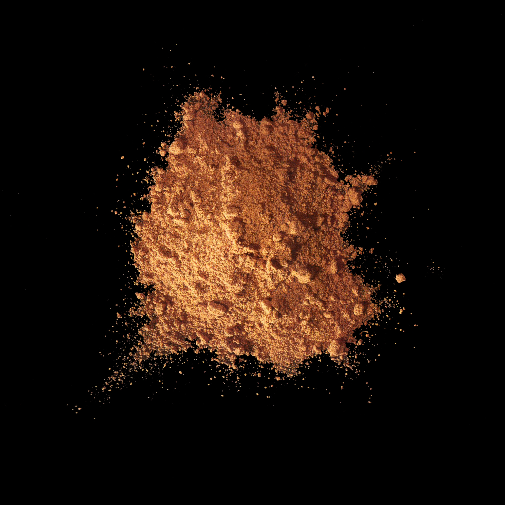

Annatto

8015-67-6
Synonyms or siblings
Roucou, Achiote, Bixin, Bija
Funtion
Appeal - Color
Description
Annatto, from the Bixa orellana shrub, is a natural dye and spice, giving orange color and a peppery flavor to foods like cheddar cheese and Spanish rice. Known as "poor man's saffron," it's essential in Latin American sazón. Produced mainly in Brazil, Peru, and Kenya, it's used in various products, though restricted in some EU sauces and seasonings. Claims of its medicinal benefits lack scientific support.
다양한 이름
우루쿠, 아치오테, 빅신, 비자
기능
착색제
설명
안나토는 빅사의 씨에서 추출한 식용 색소 겸 향신료이다. 음식에 노란 색이나 붉은 색을 내고 향미를 더하는 데 쓰이며, 브라질, 기아나, 멕시코, 인도 등 열대 지방 각지에서 재배된다. 안나토 색소의 쓰임은 주황빛의 체다치즈를 떠올리면 유추하기 쉽다. 이처럼 버터와 치즈에 첨가시 황색을 낸다.